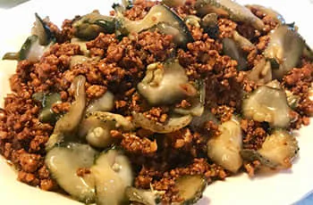
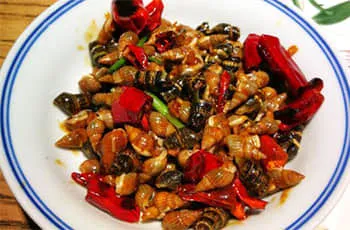
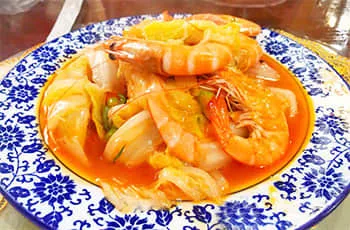

|
 |
 |
 |
 |
Food
Qingdao is a coastal city, and it has many famous dishes. We will go over the most ICONIC three of them.
Minced Meat & Sea Cucumber
|  |
Minced Meat & Sea Cucumber is a traditional dish in Qingdao. It has the flavour of both meat and sea cucumber, one from the land, and one from the ocean. People also wrap them in pancakes. |
Stir_fried Conches
|  | Conches are deep-water products in Qingdao. The black-skinned conches grown on the seashore of Hong Island are fresh and delicate. |
Sauté Cabbage with Prawns
|  | Prawn and cabbage are the main ingredients. The savoury taste is delicious as the cabbage is tasty after absorbing the sauce therein. |